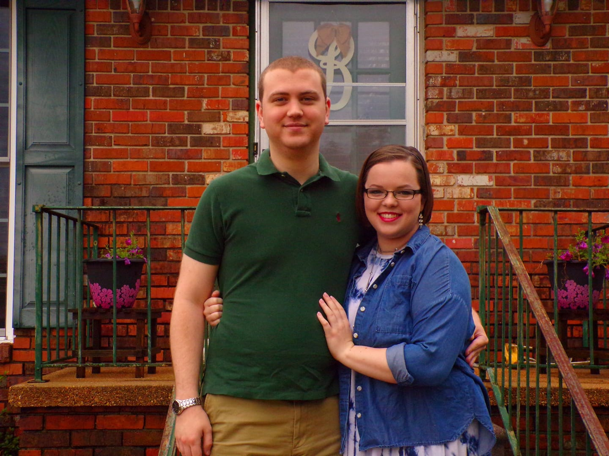

Welcome to my online portfolio!
Message from Me:
Thank you so much for visiting my portfolio! Here you will find an assortment of coding projects and technical editing documentation! I have also provided my resume and a list of skills for you to browse! I developed this website in order to provide a unique presentation of who I am, and perhaps show off my skills in web design! I look forward to your feedback or any questions you have about the material placed here! Please reference my contact information if you want to reach out to me!
This website functions as a demonstration and collection of my work as a programmer! I have worked as a Technical Editor and minored in Technical Writing, as well. I find that I have a passion for both science and writing! I believe the idea that one is either passionate about science or writing exclusively is not always true. I take joy in programming and solving mathematical equations; and I also take great pride in developing well-rounded documentation. I hope that more people decide to pursue ALL of their passions, not just one!
This online portfolio contains:
I hope that I prove myself to be an excellent programmer and developed writer in this portfolio. Please feel free to download and observe any of my projects! All I ask is that you give credit where credit is due! Happy programming and writing!
A quote that I believe represents my aspirations in life is from Mae Jemison:
"Don't let anyone rob you of your imagination, your creativity, or your curiosity. It's your place in the world; it's your life. Go on and do all you can with it, and make it the life you want to live." --Mae Jemison
When I first introduce myself to people I am always asked the basic questions. The "How old are you?" and "What do you do?" are always in the first interaction I have with people. Here in my portfolio I have an opportunity to introduce myself in my own way!
I would like to introduce myself first by my name, I am Haley Michaels. I am a student with a passion for influencing the future to be the best we can make. I have a passion for coding and technical editing, which is not a common trait. However, I do not think I am weird or out-of-the-box. I believe I broke the stigma for either being science-math minded or english-arts minded. I enjoy challenging myself and pursuing knowledge everyday! I have a strong belief that learning never ends, and that everyone has the potential to achieve their dreams.
Now, for a more formal introduction, I want to get into the basics! I am 22 years old and currently reside in Huntsville, AL. I am a Senior at The University of Alabama in Huntsville (UAH) with plans to graduate in December 2021. I am majoring in Computer Science and minoring in Mathematics and Technical Writing. I graduated high school from Northside High School in Tuscaloosa, AL and began my college journey at Auburn University.
How did I end up in Huntsville if I started in Auburn? Well, that is a fascinating story, but I will keep short here! I was an Architecture major at Auburn and took one class which taught me all I needed to know. I did not want to be an architect for the rest of my life. I decided to take a year off and discovered the outstanding research opportunities that Huntsville had to offer. I fell in love with Huntsville and The University of Alabama in Huntsville during my first visit! I loved the opportunity to make a difference in the world by helping to develop technology next to some of the most inspiring engineers! It only took one course in coding to show me that I desired to work in code. I have been pursuing that dream ever since I first moved to Huntsville in 2018!
I am currently employed at the Chick-fil-A Madison, and I am beyond thankful for the relationships I have built with this team. I have worked in several Chick-fil-A's across Alabama and love the company. I feel that I have grown as a team member and as an individual through working with this company. They have taught me so much about serving others and how to multi-task daily, I am thankful for all I have learned at Chick-fil-A!
I am currently pursuing the opportunity for an internship or co-op in order to begin my career as a software developer/technical editor. I am looking to work with a company with excellent team interactions, a desire to create change, and a solid mission! In five years I hope to be working as a developer/editor, travelling to experience cultures outside of the south, and actively pursuing my happiness in life! I am excited to see what the future holds for me in the work force and my personal life!
In order for you to experience what I am capable of doing as a Computer Science student, this section will contain projects I have worked on in school and independently. I have gathered a wide variety of programs from my years at the University of Alabama in Huntsville, and individual work completed during my down time. I have provided a brief description of each project that will allow you to select which one you would like to view first!
1. Far Skies: Alice Bang, Cameron Cooper, Haley Michaels, and Sean Pagani
This project was created through a collaborative effort by the authors listed above. We developed this game as our term project for our Intro to Object Oriented Programming in Java course at UAH. The project is a space-themed clicker game that includes classic pixel art (authentically designed by the authors) and introduces levels to the timeless format. Our team worked hard to create our best work, and we hope to continue to modify the game for possible publication.
The first independent project I created is this website. I designed this website from scratch using HTML, CSS, and JavaScript. My end goal with this project is to have my portfolio available to potential employers, or for the viewing of my peers.
This section will contain examples of my skills as a technical editor. It willl also contain my Technical Editing Contract.
The first example is a proposal I put together for my term project during my EH 301 (Technical Writing) course at UAH. The proposal outlined my research plan, scope, and other elements that were essential to completing my term project.
ProposalThe next example is the final result of my term project for my technical writing course. The project included detailed sections, forms I created, and images for reference. When I was working on this project I worked at the Dunkin Donuts on campus at UAH, and I was passionate about my team being successful. Through creating this document I was able to be a better team lead and encouraged my team to improve daily!
Term Project Progress Report 1My list of skills
My contact info.